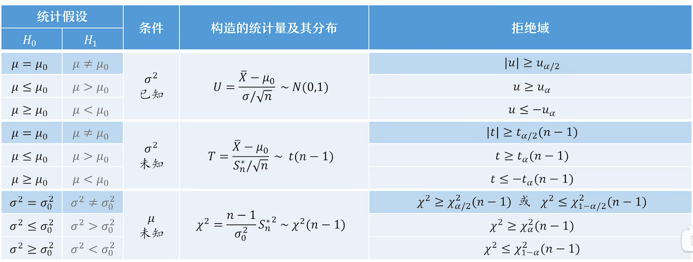
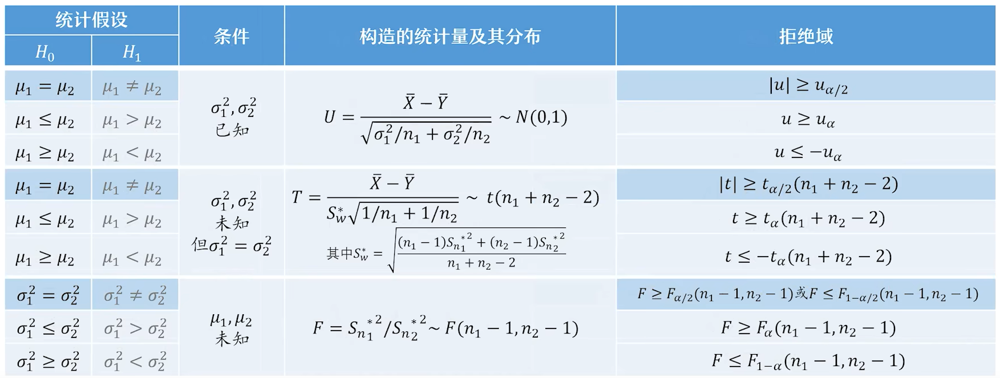
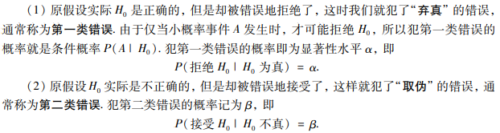
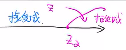
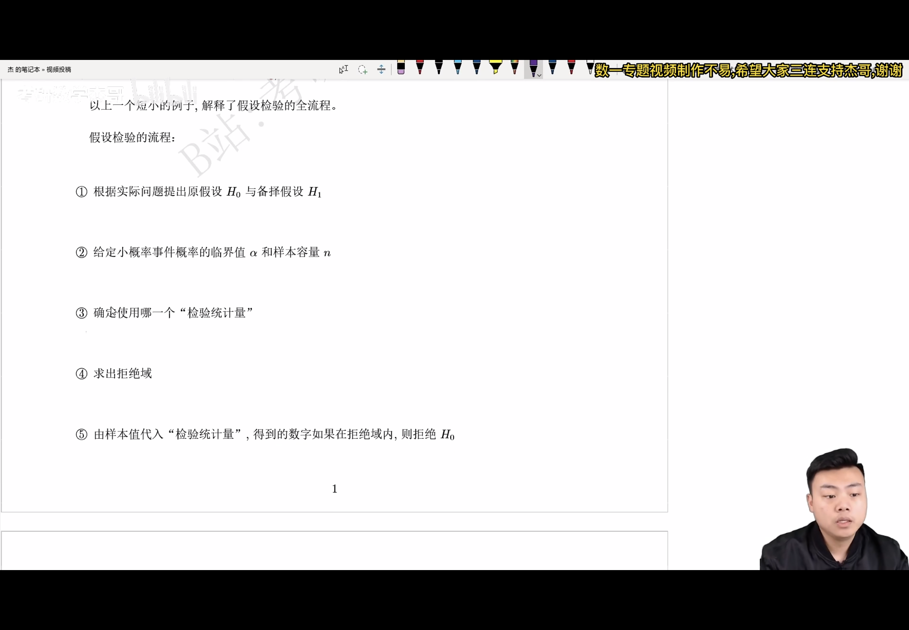
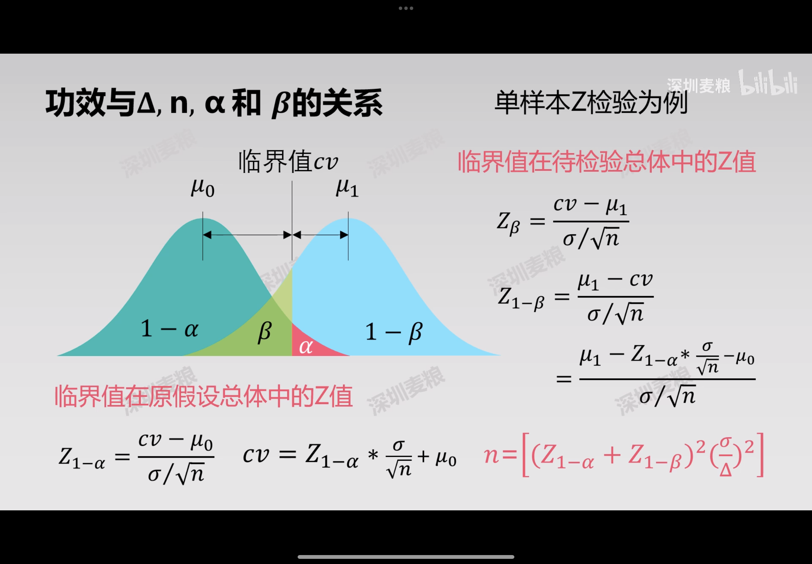

假设检验的思想（哲学基础）：证伪思想一个伪命题是没有办法被直接证明的。而当我们没法证明一个真命题的时候，如果不能证伪，那么我们只能承认这个命题是真的。步骤做原假设/备择假设差异显著（小概率时间发生）证伪检验统计量概念假设检验可能犯的两类错误显著性检验/检验功效双边检验/单边检验（主要看H1H_1H1)双边H0:μ=μ0,H1:μ≠μ0H_{0}: \mu=\mu_{0}, \quad H_{1}: \mu≠\mu_{0} \quad H0:μ=μ0,H1:μ=μ0u>u0u<u0\begin{array}{l}u>u_{0} \\ u<u_{0}\end{array}u>u0u<u0单边左边：一型 H0:μ=μ0,H1:μ<μ0H_{0}: \mu=\mu_{0}, \quad H_{1}: \mu<\mu_{0} \quad H0:μ=μ0,H1:μ<μ0二型 H0:μ≥μ0,H1:μ<μ0H_{0}: \mu≥\mu_{0}, \quad H_{1}: \mu<\mu_{0} \quad H0:μ≥μ0,H1:μ<μ0右边：一型 H0:μ=μ0,H1:μ>μ0H_{0}: \mu=\mu_{0}, \quad H_{1}: \mu>\mu_{0} \quad H0:μ=μ0,H1:μ>μ0二型 H0:μ≤μ0,H1:μ>μ0H_{0}: \mu≤\mu_{0}, \quad H_{1}: \mu>\mu_{0} \quad H0:μ≤μ0,H1:μ>μ0